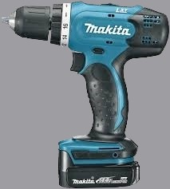
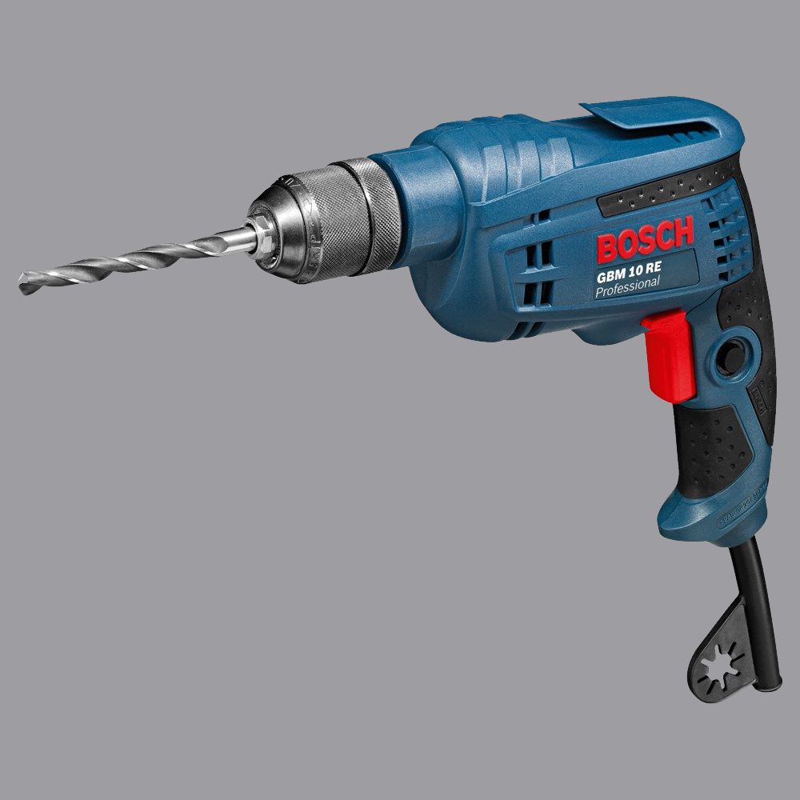
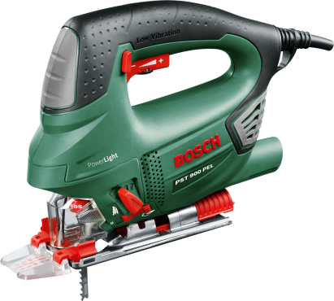
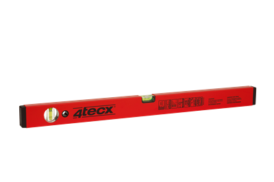
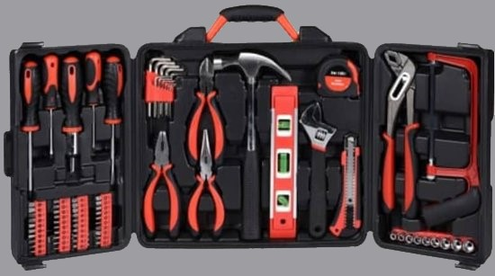

|
Elke klus begint met goed gereedschap. Zonder goed gereedschap kunt u niet beginnen.
Je hebt voor verschillende klussen, verschillend gereedschap nodig.
Een schroefmachine is altijd handig maar met een hamer kom je ook een heel eind.
|
|
|
|

|
Dit is een schroefmachine van het merk Makita.
Dit is een prima apparaat om zowel mee te boren als te schroeven.
Je hoeft dan alleen een ander bitje in de machine te stoppen.
Een bitje is het kopje waarmee je schroeft, deze heeft verschillende grotes afhankelijk van welke schroeven je gebruikt.
Klik hier om de schroefmachine aan te schaffen.
|
|

|
Dit is een boormachine van het merk Bosch.
Bosch is een iets goedkoper merk en is makkelijk in gebruik.
Deze machine is echt alleen bedoeld voor het boren van gaten.
Een voordeel dat dit alleen een boormachine is, is dat hij veel krachtiger is dan zo'n schroef/boormachine.
Hierdoor boor je makkelijker en sneller gaten.
Klik hier om de boormachine aan te schaffen.
|
|

|
Dit is een decoupeerzaag van het merk Bosch.
Een decoupeerzaag is eigenlijk een gewone zaag maar dan elektrisch aangedreven.
Dit is makkelijk als je bijvoorbeeld veel achter elkaar moet zagen.
Het scheelt veel tijd vergeleken met een gewone handzaag want je zaagt zo door alle soorten hout heen
Klik hier om de boormachine aan te schaffen.
Maar als het je te duur lijkt om een decoupeerzaag aan te schaven kan je natuurlijk altijd een gewone handzaag gebruiken.
|
|

|
Dit is een waterpas.
Een waterpas is een aluminium balk met twee kleine water capsules met een belletje erin.
Hiermee kan je kijken of je iets recht monteerd, een kast of een deur bijvoorbeeld.
Als iets recht is gemonteerd ziet het er veel netter uit.
Klik hier om de waterpas aan te schaffen.
|
|

|
Dit is een gereedschapskoffer.
Hier zit heel veel handig gereedschap in, zoals bijvoorbeeld een hamer en een heleboel soorten schroevendraaiers.
Ook zit er een kleine waterpas in waarmee je kleinere oppervlaktes waterpas kan maken.
Er zitten ook bitjes in voor uw schroefmachine, en een aantal tangen.
Die tangen kunnen altijd handig zijn tijdens het klussen. Als u bijvoorbeeld een spijker krom of op de verkeerde plaats heeft geslagen.
Klik hier om de gereedschapskoffer aan te schaffen.
|